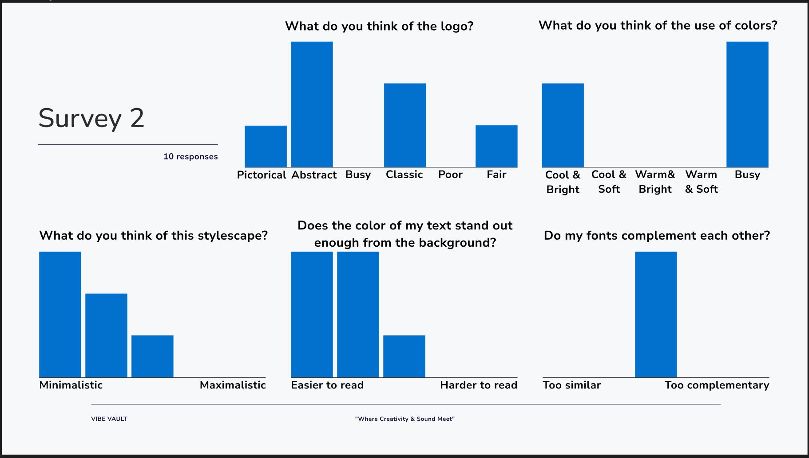

VoorafLO4 & LO5
Na aanleiding van de presentatie die we hadden gekregen van onze stakeholder was het nog steeds best onduidelijk wat precies onze taak was, daarom ben ik meteen in contact geweest met de stakeholder. Via verschillende emails en persoonlijk contact ben ik er achter gekomen wat er nu precies verwacht wordt en hoe we dit kunnen realiseren. We hoorden als feedback dat de stakeholder het fijn vind als ons ontwerp overheen komt met het ontwerp van de Pixel Playground (complementaire kleuren). Met deze informatie heb ik ook een Trello gemaakt waarin de taakverdeling stond. We hadden echter geen deadlines toegevoegd dit was een gemiste kans omdat deadlines goed werken.
Eerste Stylescape & LogoLO1 & LO3
Met ons groepje zijn we eerst begonnen met brainstormen voor een naam en kleurenpalet. Rens kwam met de naam 'Sound Cube' omdat het een geluidsstudio is en een klein kamertje is. Meteen vonden we de klik tussen de naam en de kamer. Ik ben eerst begonnen met inspiratie zoeken voor het logo. Online vond ik verschillende foto's van een LP, koptelefoon, microfoon en geluidsgolven. Deze 3 onderdelen wilde ik graag terug laten komen in mijn logo, hiernaast had ik gekeken naar de kleur die met geluid heeft te maken. Hieruit vond ik dat de kleuren blauw en paars hierbij passen. Ik had gekozen voor een blauw kleuren pallet. Met deze informatie heeft iedereen een eigen stylescape gemaakt die we kunnen voorleggen aan de stakeholder.
Feedback Stakeholder & Survey 1LO4 & LO5
Toen iedereen klaar was met de stylescapes hebben we deze voorgelegd aan de stakeholder. We hebben gevraagd welke onderdelen van elk stylescape de stakeholder het mooist vond en welke hij terug wil zien in de volgende iteratie. Hieruit was gebleken dat de stakeholder het eigenlijk belangrijk vond dat onze ontwerp keuzes overheen komen met de eisen van de doelgroep en dat we surveys moesten uitdelen aan de doelgroep. Met deze feedback zijn we aan de slag gegaan.
Hakan heeft een Office Form gemaakt die we hebben uitgedeeld aan de doelgroep. In deze survey stonden zes vragen die ons een beeld gaven over wat voor stijl de doelgroep aantrekkelijk en bijpassend vind. Hierlangs zie je dan de doelgroep de naam Vibe Vault hip vond. Dit vonden we leuk om te horen omdat we deze naam zelf ook heel leuk vonden omdat deze naam overheen komt met Pixel Playground, verder bleek het dat verschillende kandidaten verschillende kleurenpalets mooi vonden. Met deze informatie heb ik verschillende logo's en kleurenpalets gemaakt. Achteraf vond ik het interessant om te zien hoe veel impact een survey heeft op onze ontwerpkeuzes, daarom wilde ik later ook een survey maken.
Meer Logo's & Feedback StakeholderLO1 & LO3
Met de informatie uit de survey heb ik er voor gekozen om eerst veel verschillende logo's te maken. Ik heb gekeken naar icoontjes van een LP en microfoon. Deze heb ik gebruikt in mijn ontwerp zoals je hier kan zien. Ik heb twee logo's gemaakt met verschillende kleurenpalets die overheen komen uit de survey.
Nadat ik deze logo's had gemaakt ben ik langs de doelgroep geweest. Ik heb een paar kandidaten persoonlijk geïnterviewd en gevraagd wat ze van de icoontjes vonden. De meeste kandidaten vonden de LP en microfoon samen te druk en wilde liever alleen een microfoon. Qua kleurengebruik vonden ze het wit/blauw/geel kleurenpalet mooi en wilde dat we hier verder mee gingen werken. Met deze informatie heb ik nog een styleguide gemaakt zodat ik deze aan de stakeholder kan presenteren.
Met deze feedback ben ik een gesprek aangegaan met de stakeholder, ik heb in dit gesprek onze ontwerpkeuzes onderbouwd gebaseerd op de feedback, het uiteindelijke logo en styleguide gepresenteerd. De stakeholder gaf een groen licht om onze brandguide te maken.
Survey 2LO4 & LO5
Poster & MockupsLO3
Om er duidelijk achter te komen hoe de doelgroep denkt over mijn stylescape en logo heb ik nog een extra survey gemaakt. Uit deze survey is gebleken dat de stylescape minimalistisch is, het logo abstract is, de kleuren druk zijn, de tekst goed leesbaar is en het lettertype goed overheen komt met de stylescape. Al in al ben ik heel tevreden met mijn stylescape en de doelgroep ook en weet ik nu zeker dat onze brandguide naar wens gaat zijn van de stakeholder en doelgroep.
Om onze brand te representeren heb ik een poster gemaakt, mockups gemaakt en een instapost gemaakt. De poster kan overal worden opgehangen vooral in het soundlab en op school zelf. Mockups heb ik gemaakt om aan te tonen hoe ons logo er uit ziet op verschillende apparaten denk hierbij aan een laptop en telefoon.

Brand GuidelinesLO1
Met alle opgehaalde informatie en feedback van de doelgroep en stakeholder zijn we tot een uiteindelijke brandguide gekomen die hieronder weer te geven is. Onze brandguide begint met een overview en een inhoudsopgave, hierna gaan we door naar onze missieverklaring "A place where creativity and sound meet each other". Op de volgende pagina's zie je de gemaakt poster, mockups en instagram post, Hierna komen de surveys die Hakan en ik hebben uitgegeven, ook het Logo komt tevoorschijn in de brandguide waaronder een met een blauwe achtergrond en een met een witte achtergrond. De typografie die gekozen is is natuurlijk ook belangrijk daarom hebben we deze ook aangetoond. Je kan zien dat we General Sans gebruiken voor kopteksten en Nunito Sans voor teksten, na de teksten wordt het gekozen kleurenpalet aangetoond. Om alles af te maken wordt ook de content strategie aangetoond die Sem heeft gemaakt.
Feedback - Paul & Eind PresentatieLO4 & LO5
Natuurlijk hoort er ook een presentatie bij het eindproduct. We hebben een presentatie gemaakt
in de stijl van onze brandguide. Dit is eigenlijk een samenvatting van onze brandguide.
Om er zeker van te zijn hebben we onze presentatie voorgelegd aan Paul en daarop hebben we deze
feedback gekregen.
Met deze feedback hebben we een verbeterde presentatie gemaakt die hieronder is weergegeven.
Deze vond Paul er goed uit zien.
Feedback Punten
- Maak de presentatie wat meer interessant en leg de nadruk op de eindresultaten, en niet op het iteratief proces.- Als je meerdere personages hebt moeten deze verschillen van elkaar, niet 2 bijna dezelfde zoals we nu hadden.
- Maak ook een afsluiter waar nog wat visuele aspecten van het project in te zien zijn zodat hier nog feedback over gegeven kan worden.
Feedback Stakeholder - ZelfreflectieLO4 & LO5
De Stakeholder was eigenlijk heel blij met onze brandguide, hij was onder de indruk van hoeveel informatie we uit de doelgroep hebben gehaald en hoeveel onderzoek er naar de doelgroep is gedaan. Verder vond de stakeholder dat we een mooie eindproduct hebben gemaakt en hij was tevreden met onze ontwerpkeuzes die gebaseerd waren op feedback van de doelgroep.
Ik ben heel trots op onze brandguide in vind dat we goed als groepje hebben gewerkt en een mooi eindproduct hebben gemaakt. Door gebruik te maken van surveys en contact met de stakeholder en docenten hebben we een duidelijk beeld gekregen over wat er verwacht werd.